Mission Kidsono · Conception onboarding · Le paywall (écrans 14 à 18)
Le paywall best-in-class : comment s'articule l'enchaînement, écran par écran
La mission de Charles porte sur l'articulation du paywall : y a-t-il un écran « voici notre offre » avant le choix de formule ? Où passe la réassurance, écran dédié ou couche ? Combien d'écrans, dans quel ordre, jusqu'à la modale de paiement ? Balayage des séquences de paywall du corpus, ciblé sur les modèles à paliers / quotas (Storytel en tête, la référence de Charles sur l'architecture d'offre), les modèles audio/livre, et les top-tier. Lecture pleine résolution, séquence par séquence, pour reconstituer l'enchaînement réel et non des écrans isolés. Singularité Kidsono : on a déjà fait écouter ~30 min gratuitement en amont, donc pas d'essai à désamorcer ; l'enjeu est de faire sortir la carte sur une offre à quota d'heures lisible.
Corpus · 38 apps · 18 captures de paywall lues en pleine résolution
Confiance · Solide vu sur captures · Observé pattern panel · Estim. directionnel
Refs clés · Storytel (paliers d'heures), Mangas.io, Libro.fm, Vooks, Audible, Bayam
La réponse
Quatre verdicts d'abord : l'enchaînement type, l'architecture d'offre à paliers, la réassurance dans le paywall, le moment de paiement. Les séquences qui les fondent suivent. Honnêteté : je liste aussi les absences et ce qu'on écarte sciemment.
1 · L'ENCHAÎNEMENT : comment s'articule un paywall best-in-class ?
Le standard tient en 1 seul écran de paywall. Le seul cas qui en justifie 2-3, c'est l'offre à paliers (Storytel).
Solide La très large majorité du corpus (Vooks, Homer, Bayam, Reading.com, Readmio, Cosmic Kids, Audible, Pinkfong, Mangas.io) condense tout sur UN écran de paywall : valeur (titre + liste de bénéfices à coches), choix de formule (cartes de prix), réassurance (sous le CTA) et bouton d'achat, le tout scrollable. Il n'y a pas d'écran « voici notre super offre » séparé du choix de formule : la présentation de la valeur et le choix de prix cohabitent sur le même écran, la valeur en haut, les prix en bas. Le seul écran qui suit, c'est la modale native Apple/Google.
Solide L'exception, et c'est exactement notre modèle, c'est Storytel. Lui éclate le paywall en une séquence de 2 à 3 écrans parce que l'offre est à paliers d'heures : (1) un paywall de valeur avec UNE offre mise en avant, (2) un écran dédié « combien d'heures par mois ? » qui présente les 3 paliers, (3) un écran de confirmation. Le choix du quota mérite son propre écran ; la valeur et la confirmation l'encadrent. Observé Conséquence pour Kidsono : notre séquence prévue (14 présentation, 15-16 réassurance, 17 options, 18 Apple) est trop longue par le milieu. Le standard à paliers est 2 écrans de contenu (présentation de valeur + choix du palier) puis la modale Apple. La réassurance n'est pas un écran, c'est une couche (verdict 3). On passe de 5 à 3 écrans.
2 · L'ARCHITECTURE D'OFFRE à paliers / quotas : comment présenter les formules ?
Une carte par palier, empilées verticalement, le palier recommandé mis en avant (bordure + badge). Le quota nommé par usage, pas par chiffre brut.
- Nombre de formules affichées : 2 à 3, jamais plus Solide Storytel 3 paliers d'heures (15/30/45 h), Mangas.io 3 tiers (Basic/Premium/Family), Libro.fm 2 (1 ou 2 crédits/mois), Vooks/Homer/Cosmic Kids/Reading.com 2 (annuel/mensuel). Au-delà de 3, le choix paralyse.
- Disposition : cartes empilées verticalement, pleine largeur Solide Le standard dominant. Chaque carte = nom du palier + quota + prix + (badge). Pas de tableau comparatif à colonnes serrées (illisible sur mobile).
- La formule recommandée se signale par 3 marqueurs Solide 1/ une bordure colorée qui l'entoure (Storytel coral, Vooks vert, Reading.com), 2/ un badge d'économie (« Save 56% », « Économisez 25% », « Most popular »), 3/ la présélection (radio déjà coché). Storytel met en avant son palier le plus bas (15 h, le plus accessible) ; les autres mettent en avant l'annuel (le plus rentable). Le choix de ce qu'on pousse est stratégique.
- Lisibilité du quota : le nommer par usage, pas par chiffre Solide C'est la leçon Storytel : chaque palier porte un libellé d'usage (« pour écouter tous les jours » = 45 h, « pour vos trajets » = 30 h, « pour vos loisirs » = 15 h) au-dessus du chiffre. Le chiffre seul (« 15 heures ») est abstrait ; le libellé le rend tangible et désamorce le « est-ce assez ? ». Audible fait pareil sur le crédit (« 1 livre audio par mois, il vous appartient »).
- Mensuel vs annuel : un toggle haut de paywall OU deux cartes Observé Deux écoles. Toggle / bascule (Bayam : annuel à gauche barré « 25% » / mensuel à droite) ; ou deux cartes empilées (Vooks, Homer, Cosmic Kids, Reading.com). Pour un quota d'heures à paliers, le mensuel domine (Storytel n'affiche que du mensuel sur ses 3 paliers) : on ne croise pas paliers d'heures ET mensuel/annuel sur le même écran, ce serait illisible.
- Ancrage de prix : prix mensualisé + prix total, et le « barré » Solide Reading.com « Yearly 79,99 € » + « 6,67 €/mo » + « Save 56% » : on affiche le gros prix mensualisé (petit) à côté du total (rassure sur l'engagement). Le barré (« 13,49 € » barré chez Homer) ancre l'économie. Observé Pour nous sans annuel, l'ancrage se fait entre paliers (le palier du milieu paraît raisonnable entre le petit et le gros).
3 · La RÉASSURANCE dans le paywall : écran dédié ou couche ?
Une COUCHE du paywall, jamais un écran dédié (sans essai). Verdict confirmé par le bench réassurance, prolongé ici.
Solide Le bench réassurance dédié (audit-benchmark-reassurance.html) a déjà tranché : dans tout le corpus, la réassurance n'est un écran à part que pour désamorcer un essai (timeline J0/J5/J7 façon Moshi, Reading.com). Nous n'avons pas d'essai, donc cette raison d'être disparaît. Ce bench paywall le confirme et précise OÙ la couche s'insère : la réassurance est distribuée sur l'écran de présentation de l'offre, à trois endroits. 1/ En sous-titre du paywall (Storytel « Don't worry, it's easy to cancel anytime » ; Vooks « cancel any time »). 2/ Comme dernier item de la liste de bénéfices (Storytel « Cancel anytime » coché parmi les avantages : la résiliation devient une feature, pas une excuse). 3/ En ligne sous le CTA (Bayam « Sans engagement, annulez à tout moment » ; Cosmic Kids le bloc conditions sobre). Observé Le contenu de la couche (priorisé dans le bench dédié) : sans engagement > transparence du renouvellement > quota lisible > paiement sécurisé App Store > sans pub. À cela s'ajoute, propre au paywall, l'autorité au moment de décider (logos éditeurs condensés + tampon Éducation nationale, réservé à ce point).
4 · LE MOMENT DE PAIEMENT : comment on amène à sortir la carte ?
Un CTA d'action unique, dominant, qui déclenche directement la modale native. Rien entre le CTA et la carte.
Solide Sur tout le corpus, le bouton d'achat est un seul CTA pleine largeur, couleur d'accent, verbe d'action (« Je m'abonne », « Start your membership », « Continue », « Activer mon essai »). Il est collé au choix de formule (même écran), et son clic ouvre immédiatement la modale système Apple Pay / Google Play qui récapitule produit, prix, rythme et conditions (Readmio : la modale Apple Pay reprend « Essai gratuit pendant 3 jours, 6,99 € par mois », « Sans engagement. Vous pouvez résilier à tout moment. À partir du 13 juin 2026 »). Observé Il n'y a aucun écran intermédiaire entre le CTA et la modale native : la transparence du débit (« 9,99 € aujourd'hui, puis chaque mois ») se met sous le CTA, pas sur un écran à part, parce que la modale Apple la répète déjà. Pour Kidsono : le verbe ne peut pas être « Démarrer l'essai » (on n'en a pas) ; c'est « Je m'abonne » / « Débloquer tout le catalogue ». La modale Apple (notre écran 18) est donc l'écran qui suit directement le choix du palier (notre écran 17), sans 15-16 entre les deux.
Focus Storytel · l'architecture d'offre décortiquée
La référence de Charles, et le modèle le plus proche du nôtre (quota d'heures à paliers, mensuel, pas d'illimité). Sa séquence de paywall lue écran par écran.
Focus · le seul modèle à paliers d'heures du corpus
Storytel éclate son paywall en 3 écrans parce que le quota mérite son propre choix
Storytel est le seul du corpus à vendre par quota d'heures mensuel à paliers, exactement notre modèle imposé par les éditeurs. Là où les autres condensent tout sur un écran, lui sépare en trois temps, parce que choisir son palier d'heures est une décision à part entière qui ne tient pas sous un CTA. Voici la séquence réelle.
Écran 1 · valeur
Le paywall de valeur
« Subscribe now and step into a world of stories ». UNE offre mise en avant (9,99 €/mois), sous-titre réassurance « easy to cancel anytime ». Puis « Always with Storytel » : liste de 5 bénéfices à coches, dont « Cancel anytime » en dernier. Vend AVANT de faire choisir.
›
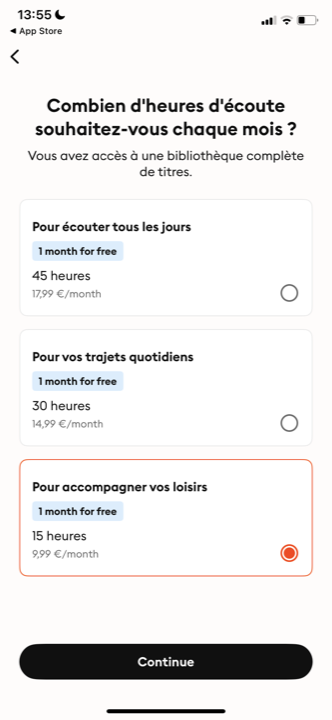
Écran 2 · le choix du palier
« Combien d'heures par mois ? »
3 cartes empilées. Chacune : un libellé d'usage (« pour écouter tous les jours », « pour vos trajets », « pour vos loisirs »), le quota (45 / 30 / 15 h), le prix (17,99 / 14,99 / 9,99 €). Le palier 15 h est présélectionné et bordé coral. CTA « Continue ». Le cœur du modèle.
›
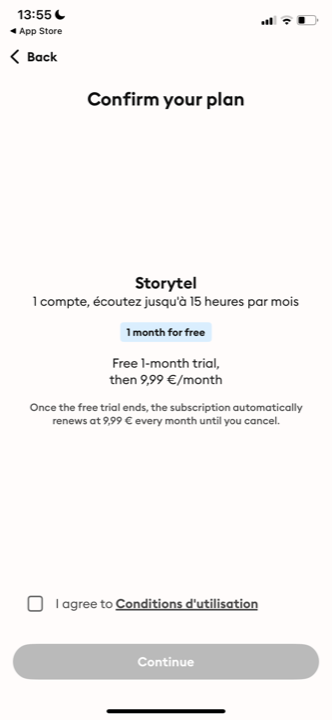
Écran 3 · confirmation
« Confirm your plan »
Très épuré, beaucoup de vide. Récap : « 1 compte, jusqu'à 15 heures par mois », « renews at 9,99 € every month until you cancel », case CGU à cocher, CTA « Continue ». Transparence totale avant la modale Apple.
Ce que Storytel apprend sur l'architecture d'offre
- Le quota se nomme par l'usage, pas par le chiffre. « Pour vos trajets / 30 h » bat « 30 heures » seul : le libellé répond à « est-ce assez pour moi ? » et transforme une grille de prix en aide à la décision.
- Séparer la valeur du choix. Écran 1 = pourquoi s'abonner (bénéfices). Écran 2 = quel palier. On ne mélange pas les deux : on convainc d'abord, on fait choisir ensuite.
- Pousser le palier le plus accessible, pas le plus cher. Storytel présélectionne 15 h / 9,99 € (l'entrée de gamme), pas 45 h. Le réflexe « pousser l'annuel » des autres apps ne s'applique pas à un quota : on rassure en mettant en avant le ticket le plus bas, les paliers hauts captent ceux qui en veulent plus.
- La confirmation fait la transparence, la case CGU remplace le pavé légal. Un écran sobre « voici ce que vous payez, quand, jusqu'à résiliation » + une checkbox suffit. Pas de bloc de conditions en gris (modèle KiLi écarté).
- Mono-format mensuel. Storytel ne croise jamais paliers d'heures ET annuel/mensuel : ses 3 paliers sont tous mensuels. Pour nous, c'est la voie lisible (un seul axe de choix : le volume d'heures).
Les exemples, par enchaînement
Les séquences et écrans qui fondent les verdicts, lus un par un. D'abord les modèles à paliers (notre cas), puis le paywall mono-écran standard, puis la réassurance en couche et le moment de paiement.
Architecture d'offre · les modèles à plusieurs paliers (notre cas)
Plusieurs formules : cartes empilées, recommandé mis en avant
Comment le marché présente 2-3 formules. La règle est constante : cartes verticales, une seule mise en avant par bordure + badge + présélection. À reprendre directement pour nos paliers d'heures.
Mangas.io
3 tiers · Basic / Premium / Family
« Tout ça, au prix d'un manga par mois ! » 3 cartes empilées : Basic 6,99 € / Premium 8,99 € / Family 15,99 €.
3 paliers nommés, empilés, prix lisible. La structure exacte à viser (nommer les paliers, les empiler). À doser : le fond violet saturé + 12 pastilles flottantes surchargent (notre crème sera plus calme).
Libro.fm
2 paliers · 1 ou 2 crédits/mois
« 1 credit/month · 9,99 € » badge « Most popular » ; « 2 credits/month · 17,99 € ». CTA par carte.
Le modèle quota le plus proche du nôtre : on vend un volume (crédits = nos heures), 2 paliers, le plus accessible badgé « Most popular ». Lisible, sobre. La logique à transposer aux heures.
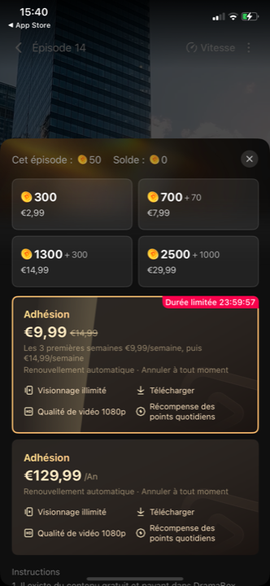
DramaBox
Packs de coins + abonnement
Grille de packs de jetons (300/700/1300/2500) + 2 abonnements (9,99 € / 129,99 €) avec « Durée limitée » en compte à rebours.
Contre-modèle de lisibilité. Mélange jetons one-shot ET abonnement sur un écran : trop dense, fausse urgence (compte à rebours). Montre le piège à éviter : ne pas croiser deux logiques d'achat.
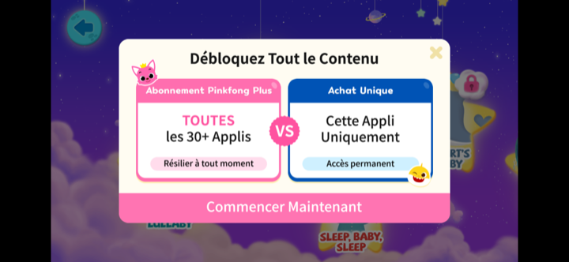
Pinkfong
Abonnement vs achat unique
« Débloquez tout le contenu » : 2 colonnes face à face, « Abonnement (toutes les 30+ applis, résiliable) » VS « Achat unique (cette appli, accès permanent) ».
Bonne idée d'opposer 2 logiques en VS quand elles sont vraiment différentes. Mais pour nous (un seul modèle, l'abonnement à paliers), le VS n'a pas lieu d'être. Référence d'articulation, pas à copier.
Enchaînement · le paywall mono-écran (le standard du corpus)
Valeur + formules + réassurance + CTA, tout sur un écran scrollable
La forme dominante hors paliers : un seul écran fait tout. Titre, liste de bénéfices, 2 cartes de prix (recommandé en avant), réassurance sous le CTA. C'est le squelette dont Storytel s'écarte uniquement pour insérer le choix du palier.
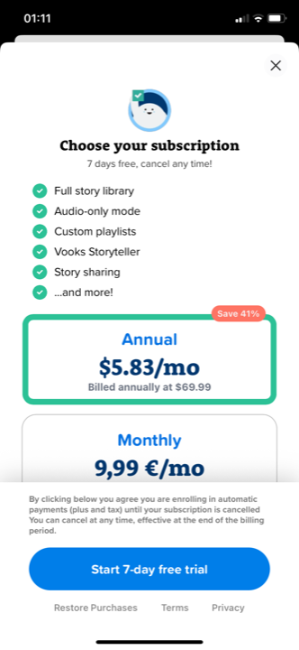
Vooks
« Choose your subscription »
Logo + « 7 days free, cancel any time! » + 6 bénéfices à coches + carte Annual bordée vert « Save 41% » au-dessus de Monthly + CTA + conditions sobres.
Le squelette de référence. Valeur en haut (coches), choix en bas (annuel mis en avant), réassurance en sous-titre ET sous le CTA. Tout tient sur un écran. À reprendre, en y insérant notre écran « paliers » à la Storytel.
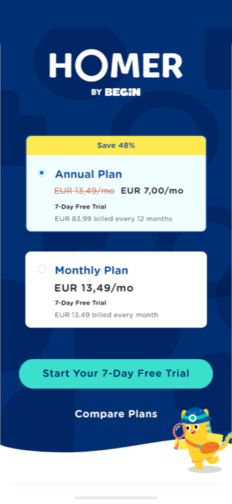
Homer
Paywall · 2 plans
« Save 48% » sur Annual (prix barré 13,49 € → 7,00 €/mo, présélectionné radio) au-dessus de Monthly. CTA + « Compare Plans ».
Modèle de la carte recommandée : badge + prix barré + radio présélectionné. L'ancrage par le barré est net. Le « 7-Day Free Trial » : sans objet pour nous.
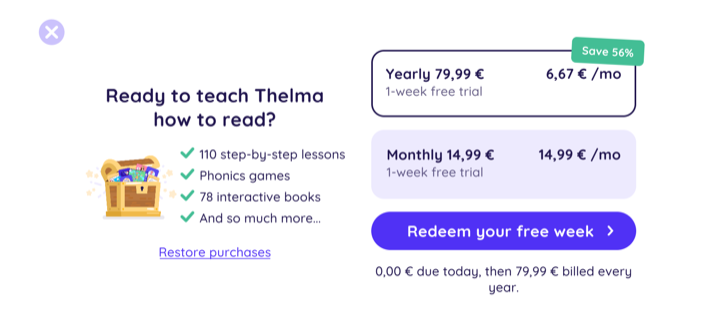
Reading.com
Paywall complet · yearly/monthly
« Yearly 79,99 € · 6,67 €/mo » badge « Save 56% » + « Monthly 14,99 € ». Sous le CTA : « 0,00 € due today, then 79,99 € billed every year ».
L'ancrage de prix de référence : prix total + mensualisé + badge d'économie. Et la transparence du débit en une ligne sous le CTA. On retire le « 0 € today » (lié à l'essai) : pour nous « 9,99 € aujourd'hui, puis chaque mois ».
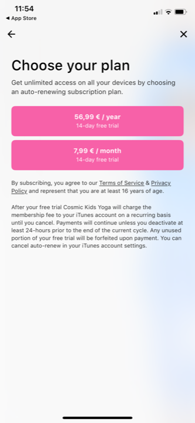
Cosmic Kids
« Choose your plan »
2 cartes (56,99 €/an / 7,99 €/mois), puis un bloc de conditions sobre (résiliation, renouvellement, lien CGU).
Variante minimaliste : 2 cartes + bloc conditions discret. Propre mais sans hiérarchie de recommandation (pas de badge, pas de bordure). Montre qu'il faut signaler le palier poussé, sinon le choix flotte.
Réassurance · la couche, pas l'écran (confirmation du bench dédié)
Où la réassurance s'insère dans le paywall
Le bench réassurance a tranché « couche, pas écran ». Voici où elle se pose concrètement dans l'enchaînement : sous-titre du paywall, item de la liste de bénéfices, ligne sous le CTA, et la « valeur » explicitée façon Audible.
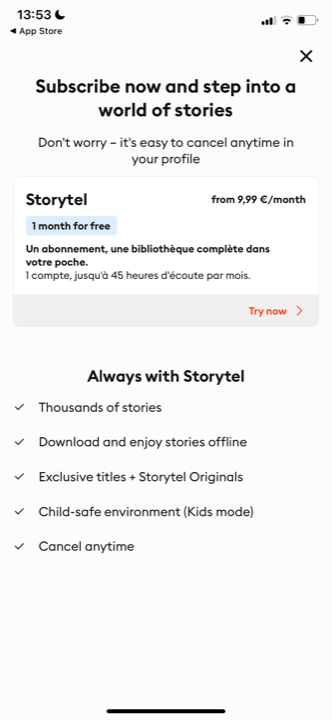
Storytel
Réassurance distribuée
Sous-titre « Don't worry, it's easy to cancel anytime in your profile ». Et « Cancel anytime » en dernière coche des bénéfices.
La résiliation distribuée : en sous-titre ET en bénéfice. Ce n'est pas une excuse en pied de page, c'est une feature assumée. Le placement exact à reprendre.
Bayam (FR)
Paywall · réassurance en pied
Bénéfices à coches + bascule annuel/mensuel (annuel « Économisez 25% ») + CTA « Je m'abonne » + « Sans engagement, annulez à tout moment ».
Le réflexe FR propre : la ligne résiliation sous le CTA, la bascule annuel/mensuel claire. Le modèle d'articulation FR à suivre. Voix parent, vouvoiement.
Audible
« Ce que vous obtenez »
« Choisissez 1 livre audio par mois… il vous appartient définitivement » + « Des milliers de titres inclus ».
La valeur du quota explicitée : on dit ce qu'on obtient pour son argent, simplement. Modèle de clarté à appliquer à « ce que vaut votre quota d'heures ». Rassure par la lisibilité, pas par la promo.
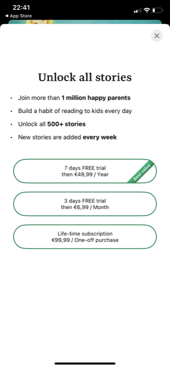
Readmio
« Unlock all stories »
Bénéfices courts (« 500+ stories », « new stories every week ») + 3 options (an/mois/à vie) en pilules sobres bordées vert.
Variante épurée : 3 options en pilules fines, sans surcharge. On retire « 1 million happy parents » (preuve de masse qu'on n'a pas). La sobriété des pilules est bonne à voir.
Moment de paiement · ce qui précède immédiatement la carte
Le CTA déclenche directement la modale native, sans écran intermédiaire
Entre le choix de formule et la carte bancaire, il n'y a rien : le CTA d'action ouvre la modale système qui récapitule tout. La confirmation (Storytel, Bayam) reste dans l'app, juste avant ou juste après.
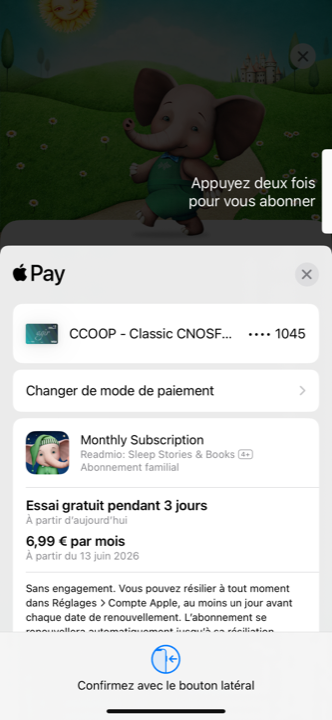
Readmio
La modale Apple Pay (l'écran 18)
Apple Pay : « Monthly Subscription », « Essai gratuit pendant 3 jours, 6,99 € par mois », « Sans engagement. Vous pouvez résilier à tout moment. À partir du 13 juin ». « Confirmez avec le bouton latéral ».
Ce qu'on ne designe pas mais qui suit le CTA : la modale native récapitule produit, prix, rythme, résiliation. C'est pour ça qu'aucun écran de réassurance n'est nécessaire avant : Apple le redit déjà.
Mangas.io
L'échappatoire sous le CTA
CTA principal « Activer mon essai gratuit » + dessous, en secondaire discret, « Découvrir l'app d'abord ».
Le paywall fermable géré proprement : un CTA primaire fort, et une sortie en lien secondaire discret (notre « accès limité »). Pas de croix agressive seule : on offre une porte de sortie nommée, moins frustrante.
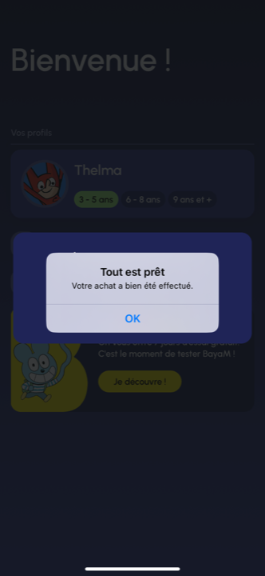
Bayam (FR)
Confirmation post-achat
Modale native « Tout est prêt · Votre achat a bien été effectué » + « OK », sur l'écran des profils.
La confirmation minimale post-paiement : une modale courte, pas un écran. Suffit. On enchaîne direct sur l'accès complet (catalogue / profils), sans écran de félicitations lourd.
Ce que ça donne pour Kidsono
La séquence de paywall recommandée : 3 écrans (au lieu de 5)
Écran 14
Présentation de l'offre (valeur)
Titre voix parent + liste de bénéfices à coches (catalogue d'éditeurs, sans pub, espace sûr, résiliable). Réassurance en sous-titre + dernière coche. Autorité ici : logos éditeurs condensés + tampon Éducation nationale. CTA « Choisir ma formule ».
›
Écran 17 (devient 15)
Choix du palier d'heures
« Combien d'heures par mois ? » 3 cartes empilées, chacune nommée par usage (à la Storytel) + quota (~5/10/15 h) + prix mensuel. Palier le plus accessible présélectionné + bordé jaune. CTA « Je m'abonne ».
›
Écran 18
Modale Apple (native)
On ne la designe pas. Elle récapitule produit, prix, rythme, résiliation. Le CTA de l'écran précédent l'ouvre directement.
- Supprimer les écrans 15 et 16 (« réassurance 1 et 2 »). Le benchmark ne justifie un écran de réassurance que pour désamorcer un essai, qu'on n'a pas. La réassurance devient une couche de l'écran 14 (sous-titre + dernière coche + ligne sous le CTA). On passe de 5 écrans à 3.
- Garder la séparation valeur / choix du palier (la leçon Storytel). Écran 14 convainc (pourquoi s'abonner) ; écran « paliers » fait choisir (combien d'heures). C'est le seul cas où éclater le paywall est justifié, et c'est précisément le nôtre. Ne pas tout fondre sur un seul écran : le quota mérite son écran.
- Présenter les paliers nommés par l'usage, pas par le chiffre nu. « Pour les trajets du quotidien · 10 h » plutôt que « 10 heures ». Le libellé répond à « est-ce assez ? » et fait du quota un argument de réassurance, pas une grille de prix. En crème néo-brutaliste : 3 cartes bordées noir épais, ombre décalée, le palier poussé en jaune #FFCB02.
- Pousser le palier le plus accessible, présélectionné. Comme Storytel (15 h / 9,99 €, pas 45 h) : on présélectionne et on borde le ticket le plus bas. Les paliers hauts captent ceux qui en veulent plus, sans effrayer l'entrée.
- Mono-axe : que des paliers mensuels. Ne pas croiser paliers d'heures ET annuel/mensuel (illisible). Un seul axe de choix : le volume d'heures. Si un annuel est voulu plus tard, il se gère ailleurs, pas sur cet écran.
- Le CTA est « Je m'abonne » / « Débloquer le catalogue », jamais « Démarrer l'essai ». Pas d'essai chez nous. Son clic ouvre directement la modale Apple. Sous le CTA : la transparence du débit (« 9,99 €/mois, résiliable quand vous voulez »).
- Paywall fermable, sortie nommée. Façon Mangas.io : à côté de la croix, un lien secondaire discret (« Continuer avec les extraits ») plutôt qu'une croix seule. Moins frustrant, et cohérent avec notre accès limité qui rouvre le paywall au clic « Lecture ».
L'avis
Force : la reco s'appuie sur une régularité nette (le paywall standard tient sur un écran ; l'unique exception qui en justifie plusieurs est le modèle à paliers) et surtout sur Storytel, seule app du corpus au modèle identique au nôtre (quota d'heures mensuel à paliers). On ne projette pas : on copie une structure qui existe et qui marche sur exactement notre contrainte. La séparation valeur / choix du palier et le quota nommé par usage sont directement transposables.
Risques : 1/ supprimer les écrans 15-16 contredit la décision de réunion (« réassurance au paiement : deux écrans, confirmé ») ; à assumer explicitement avec le Président, en montrant que le benchmark ne les justifie que pour un essai. 2/ Storytel garde un essai (« 1 month for free ») sur ses écrans : on copie son architecture (3 temps, paliers nommés, confirmation sobre), pas son mécanisme d'essai. 3/ Les libellés d'usage des paliers sont à inventer sans paraître condescendants pour des heures d'écoute enfant (Charles donnera les chiffres et tranchera les libellés). 4/ Le palier à pousser (le plus bas) suppose que l'entrée de gamme reste rentable côté éditeurs ; à valider.
Position vs standard : au standard sur le fond (un écran de valeur, choix de formule clair, réassurance en couche, CTA unique vers la modale native) ; contrarian assumé sur le nombre d'écrans (3 et non 5 : on supprime les deux écrans de réassurance que le marché ne met que pour un essai). L'architecture à paliers d'heures nommés par usage est en avance sur le marché FR, qui vend mal le quota ; Storytel est la seule preuve qu'elle fonctionne, ce qui est à la fois sa force (modèle identique) et sa limite (un seul point de comparaison).
Document de travail, mission conseil Kidsono. 18 captures de paywall lues en pleine résolution (Storytel ×4, Mangas.io ×2, Libro.fm, DramaBox, Pinkfong, Bayam ×2, Homer, Vooks, Audible, Reading.com, Cosmic Kids, Readmio ×2). Prolonge et ne refait pas le bench réassurance (audit-benchmark-reassurance.html : réassurance = couche, confirmé ici, placement précisé). Refs positives limitées aux gagnants du corpus ; famille des perdants citée en contre-exemple uniquement. Niveaux : Solide vu sur captures · Observé pattern récurrent du panel · Estim. projection directionnelle. 2026-06-16.